| Take | Hero at 1024, then renders at 128 / 64 / 48 / 32 / 16 css px (2× retina sources), plus the 16px squint magnified | Rubric | Verdict |
|---|---|---|---|
| A · icon.svghand-authored layered SVG, built by build_icon.py — SHIPS |
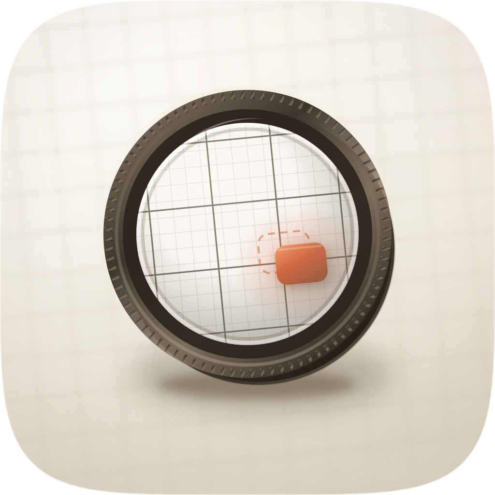 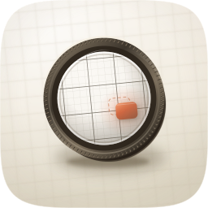 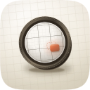 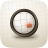 |
11 / 12 | Passes all four non-negotiables on the real renders: the shared squircle from squircle-path.txt, optically centred at 59% of tile width, a filled-black silhouette that names a loupe, and a 16px read of dark ring / bright interior / warm pip at a p90−p10 contrast of 0.508 against a 34-icon family median of 0.344. Four named layers (bg/mid/fg/highlight), so #10 holds by construction. Two nameable devices beyond glyph-on-gradient: the lattice steps up 1.57× in pitch at the glass edge, and the one caught cell carries both readings of the verdict — where it is, in ember, and where it was expected, ghosted. #7 is the one check called failed: the ring and barrel measure 2.37:1 on p90:p10 (family median 1.65:1), but the lens interior sits at roughly 1.1:1 against the porcelain beside it, so the whole object does not clear 3:1 — only its rim does. |
| C2 · icon-engineC2-raster.pngGPT Image 2 raster, corpus-referenced (apple-27, apple-23, apple-19) — material target |
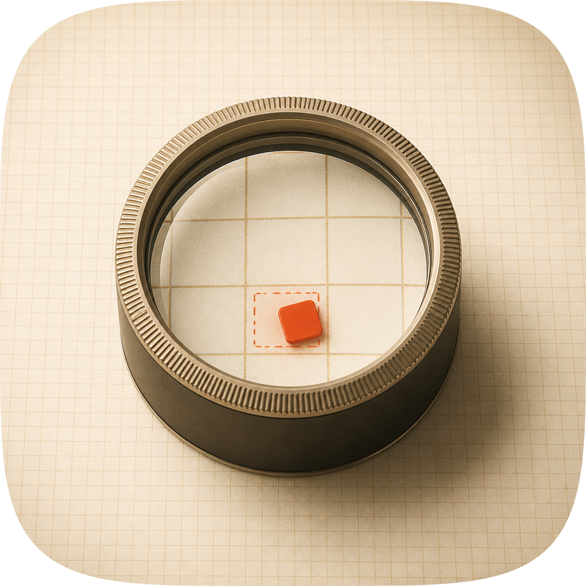 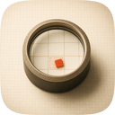 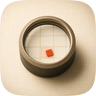 |
9 / 12 | The best material in the set and the only take that executes the magnification step more legibly than the master: fine grid outside, coarse grid inside, a real glass edge, a warm graphite barrel with a lit lower-right silhouette, the strongest 16px contrast (0.586) and figure-ground (2.73:1) of the four. It loses on two non-negotiables, so its score is beside the point: the object runs about 72% of tile width against the 55–65% composition constant (#2), and filled black it names a tall cylinder or jar rather than a loupe (#3). As a flat pre-masked raster it also re-creates the #10 failure the whole layer plan exists to avoid. Salvaged into the master: the meniscus — a bright ring where curved glass meets the bezel, with a thin dark line inboard giving the glass thickness. Not salvaged: its ochre inner grid, which puts a second warm hue in competition with the accent. |
| C · icon-engineC-raster.pngGPT Image 2 raster, corpus-referenced (apple-23, apple-27, apple-26, previous master) |
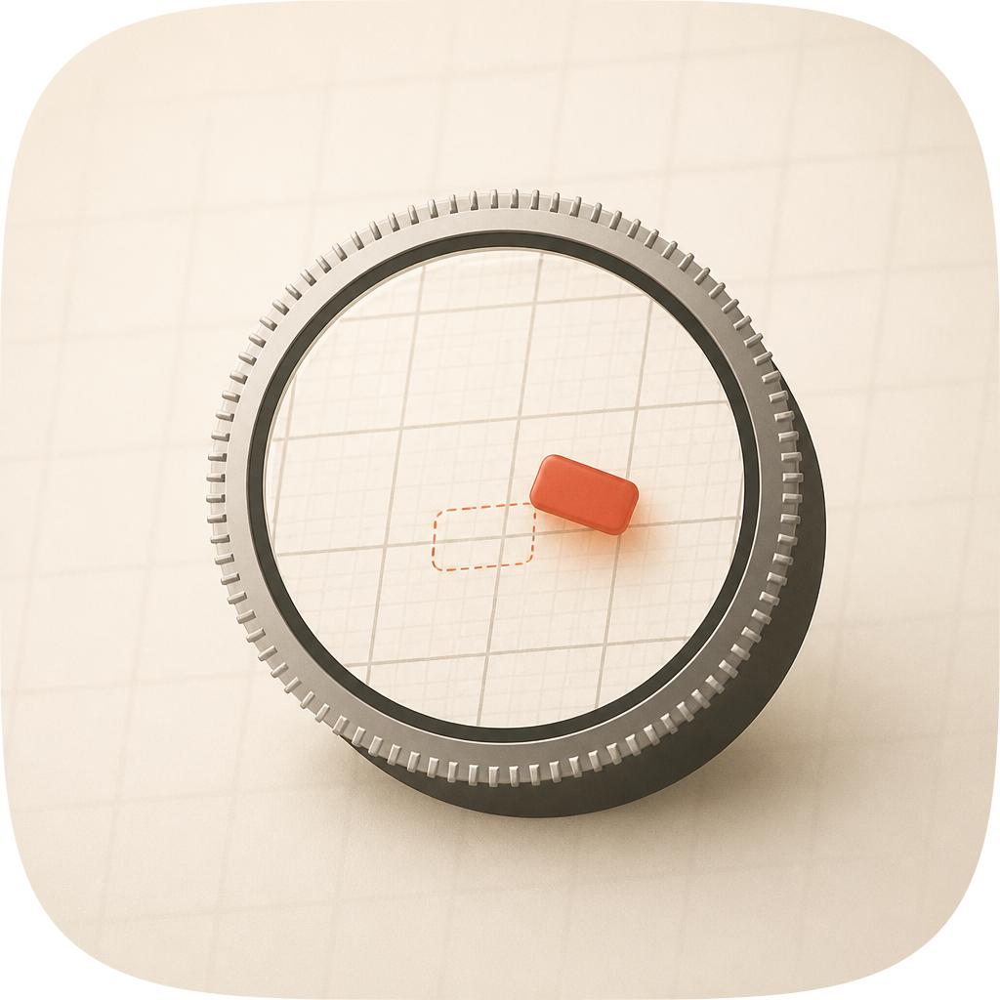 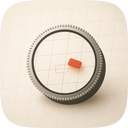 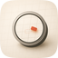 |
8 / 12 | Lost on the signature move: the lattice is the same pitch inside the glass as outside it, so nothing in the picture says the lens is magnifying, and the chip floats rather than sitting in a cell (#11). Figure-ground is 1.52:1 and 16px contrast 0.302, both below family median, because the barrel came back grey-steel rather than warm graphite — which also makes it the take least at home beside its siblings. The knurled band reads as a gear rather than as milling. Kept on disk as the first raster attempt; it is what made the second prompt name the pitch step explicitly. |
| B · icon-engineB-arrow.svgArrow 1.1 vector take, spec-as-brief |
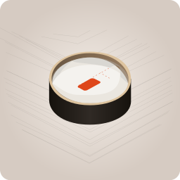 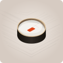 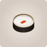 |
4 / 12 | Fails three of the four non-negotiables. It baked its own corner radius instead of taking the family squircle (#1); filled black it is an isometric drum, which both misnames the subject and collides with braindump's striated charcoal drum (#3); and at 16px its contrast is 0.131 against a 0.344 median, with the chip reduced to a two-pixel smudge (#4). Figure-ground 1.08:1. The graph plane came back as chevrons and the ghost outline as a stray diagonal, so the verdict device is absent. Kept on disk: its one usable idea is the low, wide barrel proportion, which is closer to a real loupe than the master's. |
#F9F5EE to #DED7C5), the accent is kin to Fledgeling's #C4622D at 0.88% of the tile against Safari's 1.77%, and the ground luminance range and falloff were sampled off corpus/apple-2026/apple-23.png rather than described from memory. The one construction lifted from a raster take is the glass meniscus, credited to C2 above.
fidelity.py's perceptual tier needs torch, which is not installed here, and the gate refuses a degraded tier by design rather than guessing — so the claim that A's material is close to C2's rests on looking at both, not on a number, and C2 is visibly richer in the barrel and the glass edge. (3) No blind panel was run, for the same reason: nothing independent has preferred A over C2. (4) The barrel is still slightly too tall in proportion for a real loupe; B, of all takes, had the better proportion. (5) The accent chip measures 1.60:1 against the plane it sits on — hue-separated more than value-separated, the same trade Safari's needle makes at roughly 1:1, so it is defensible but it is a trade.| milled band | ring vs ground | p90:p10 at 256 | 16px contrast |
|---|---|---|---|
pale metal #E7DECE (first draft) | 1.39:1 | 1.44:1 | 0.314 |
warm gun #C4B7A2 | 1.75:1 | — | 0.375 |
gunmetal #AC9E88 | 2.02:1 | — | 0.406 |
graphite #9C8F7A | 2.24:1 | 1.91:1 | 0.424 |
graphite dark #8A7C67 + wider bezel — kept | 2.56:1 | 2.37:1 | 0.502 |
design-review, which owns glass panels plus a crosshair reticle on a cool porcelain ground (hue ~207°); this icon takes the family's warm porcelain (hue ~40°) and a round instrument, so the two separate on both ground hue and device. At 32px one reads as stacked rectangles with a cross and the other as a dark ring with a warm pip. The dark deep-sea register stays trawl's alone.python3 create-mac-icon/skills/create-mac-icon/scripts/audit_sheet.py render . (1024 / 256 / 128 / 96 / 64 / 32 sources); verified by its check subcommand. Measurements in this sheet are p90−p10 grayscale spread at the stated size and p90:p10 luminance ratios over opaque pixels, computed the same way for every icon in the marketplace so the family figures are comparable.